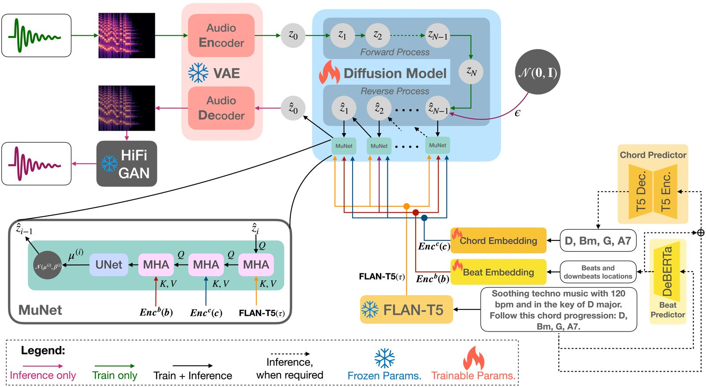

Mustango: Toward Controllable Text-to-Music Generation
Jan Melechovsky1, Zixun Guo2, Deepanway Ghosal1, Navonil Majumder1, Dorien Herremans1, Soujanya Poria1
1Singapore University of Technology and Design, Singapore
2Queen Mary University of London, UK
Abstract
With recent advancements in text-to-audio and text-to-music based on latent diffusion models, the quality of generated content has been reaching new heights. The controllability of musical aspects, however, has not been explicitly explored in text-to-music systems yet. In this paper, we present Mustango, a music-domain-knowledge-inspired text-to-music system based on diffusion, that expands the Tango text-to-audio model. Mustango aims to control the generated music, not only with general text captions, but from more rich captions that could include specific instructions related to chords, beats, tempo, and key. As part of Mustango, we propose MuNet, a Music-Domain-Knowledge-Informed UNet sub-module to integrate these music-specific features, which we predict from the text prompt, as well as the general text embedding, into the diffusion denoising process. To overcome the limited availability of open datasets of music with text captions, we propose a novel data augmentation method that includes altering the harmonic, rhythmic, and dynamic aspects of music audio and using state-of-the-art Music Information Retrieval methods to extract the music features which will then be appended to the existing descriptions in text format. We release the resulting MusicBench dataset which contains over 52K instances and includes music-theory-based descriptions in the caption text. Through extensive experiments, we show that the quality of the music generated by Mustango is state-of-the-art, and the controllability through music-specific text prompts greatly outperforms other models in terms of desired chords, beat, key, and tempo, on multiple datasets.
Live demo available on Replicate!
Highlights

Figure 1: Mustango architecture.
Mustango generated samples:
The models were provided with the below input text prompts to generate the music.| This techno song features a synth lead playing the main melody. This is accompanied by programmed percussion playing a simple kick focused beat. The hi-hat is accented in an open position on the 3-and count of every bar. The synth plays the bass part with a voicing that sounds like a cello. This techno song can be played in a club. The chord sequence is Gm, A7, Eb, Bb, C, F, Gm. The beat counts to 2. The tempo of this song is 128.0 beats per minute. The key of this song is G minor. |
| This is a new age piece. There is a flute playing the main melody with a lot of staccato notes. The rhythmic background consists of a medium tempo electronic drum beat with percussive elements all over the spectrum. There is a playful atmosphere to the piece. This piece can be used in the soundtrack of a children's TV show or an advertisement jingle. |
| The song is an instrumental. The song is in medium tempo with a classical guitar playing a lilting melody in accompaniment style. The song is emotional and romantic. The song is a romantic instrumental song. The chord sequence is Gm, F6, Ebm. The time signature is 4/4. This song is in Adagio. The key of this song is G minor. |
| This folk song features a female voice singing the main melody. This is accompanied by a tabla playing the percussion. A guitar strums chords. For most parts of the song, only one chord is played. At the last bar, a different chord is played. This song has minimal instruments. This song has a story-telling mood. This song can be played in a village scene in an Indian movie. The chord sequence is Bbm, Ab. The beat is 3. The tempo of this song is Allegro. The key of this song is Bb minor. |
| This is a live performance of a classical music piece. There is an orchestra performing the piece with a violin lead playing the main melody. The atmosphere is sentimental and heart-touching. This piece could be playing in the background at a classy restaurant. The chord progression in this song is Am7, Gm, Dm, A7, Dm. The beat is 3. This song is in Largo. The key of this song is D minor. |
| This is an instrumental hip-hop music piece. It is meant to be used as a rap beat. There is a fuzzy synth bass playing a groovy bass line with a mellow sounding keyboard playing alongside it. There is a loud electronic drum beat in the rhythmic background. This piece has a crisp and urban atmosphere. It could either be used as a rap beat or it could take place in the soundtrack of a crime movie/TV show with a modern city setting. The chord sequence is Abm7. The beat is 4. This song is in Andante. This song is in the key of Ab minor. |
| The song is an instrumental. The tempo is medium with a guitar accompaniment and leads into a strong drumming rhythm and bass line. The song is exciting and energetic. The song is a movie soundtrack for a travel show or a documentary. The chord sequence is D, G, D, G, D. The time signature is 2/4. The bpm is 58.0. The key of this song is D major. |
| The song is an instrumental. The song is medium tempo with an accordion accompaniment, violin solo and a flute melody. The song is beautiful and nostalgic. The audio quality is poor. The song has an old gypsy soul to it. This song is in Andante. This song is in the key of B minor. The time signature is 3/4. The chord progression in this song is A, D, Bm. |
"Crazy Samples" -- combining music with general audio:
These samples were generated from the pre-trained version of Mustango, which allows for some crazy combinations of music and general audio to be synthesized.| A symphony plays a classical harmonic and epic sounding piece that culminates with the loud bang of a cannon shot. |
| This is a techno piece with drums and beats and a leading melody. A synth plays chords. The music kicks off with a powerful and relentless drumbeat. Over the pounding beats, a leading melody emerges. In the middle of the song, a flock of seagulls flies over the venue and make loud bird sounds. It has strong danceability and can be played in a club. The tempo is 120 bpm. The chords played by the synth are Am, Cm, Dm, Gm. |
| A blues song played by a guitar and bass. The atmosphere is energetic, yet melancholic and sad. There is a bear coming from the audience to roar out loud. |
Examples from the expert listening study:
| Mustango | Mustango | Tango | Tango |
|---|---|---|---|
| Pretrained and finetuned on MusicBench | Trained only on MusicBench | Pretrained | Pretrained and finetuned on MusicBench |
| An instrumental blues melody played by a lead guitar and a strumming acoustic guitar. The acoustic guitarist's strumming keeps the rhythm steady. The chord sequence is G7, F7, C7, G7. This song goes at 100 beats per minute. | |||
| A piano plays a popular melody over the chords of Am, Fmaj7, Cmaj7, G. There is only piano playing, no other instruments or voice. The tempo is Adagio. | |||
| This is a techno piece with drums and beats and a leading melody. A synth plays chords. The music kicks off with a powerful and relentless drumbeat. Over the pounding beats, a leading melody emerges. It has strong danceability and can be played in a club. The tempo is 160 bpm. The chords played by the synth are C, F, G. | |||
| A horn and a bass guitar groove to a reggae tune. The combination of the horn section's catchy melodies and the buoyant bassline creates an irresistible groove. The bassline is bouncy and lively. The song is played at the pace of Adagio. An electric keyboard plays the chords Am, Dm, G, C. | |||
| This is a metal song with a guitar, drums and bass guitar. The bassist, wielding a solid-bodied bass guitar, adds depth and power to the sonic landscape. The drummer commands a massive drum kit. With a relentless force, they pound out thunderous rhythms, driving the music forward. As the song begins, the guitar roars to life, delivering a series of distorted chords. It follows the chords of Em, C, G, D. The tempo is 120 bpm. | |||
Notes
Our code and dataset are available on github as open source. We thus aim to facilitate future music generation model development, training and evaluation.